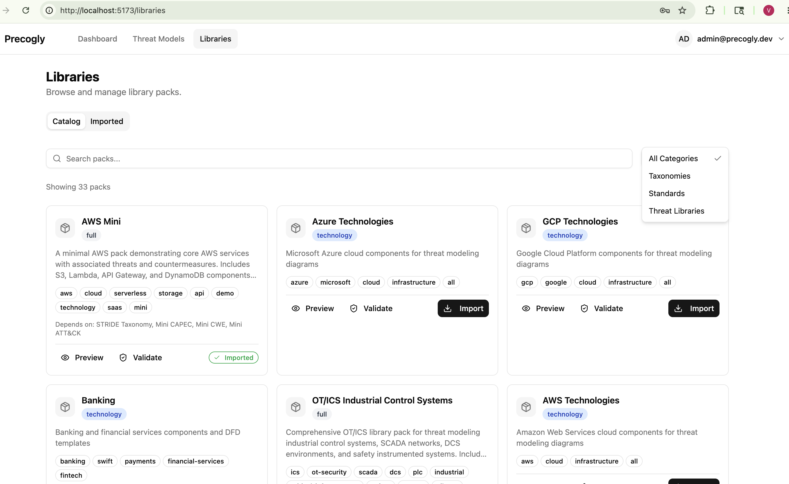
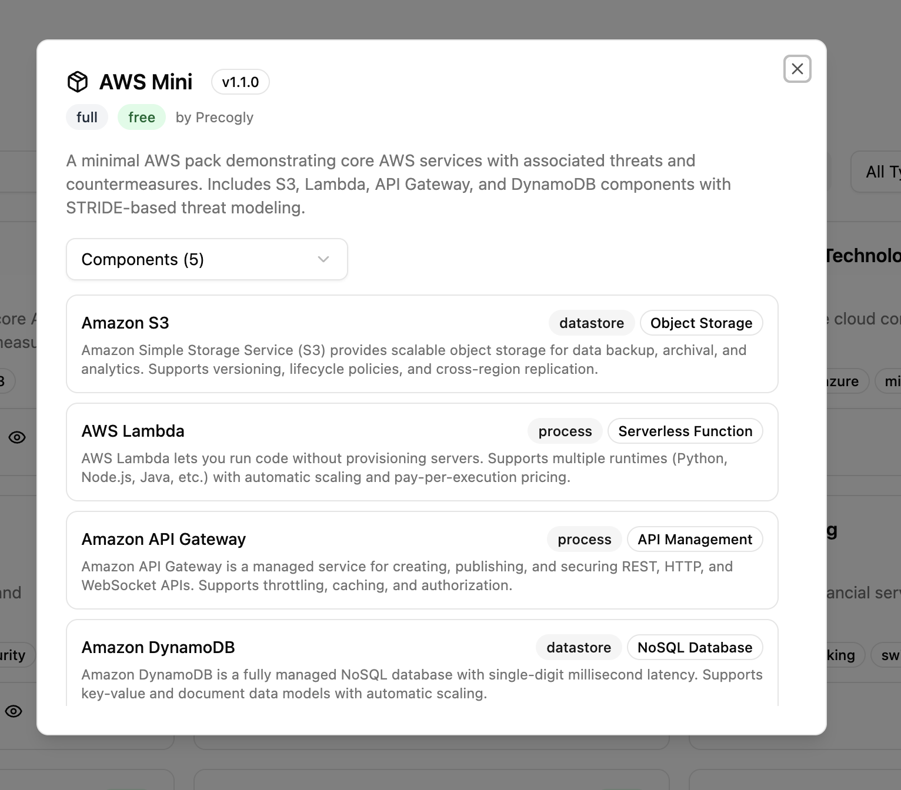
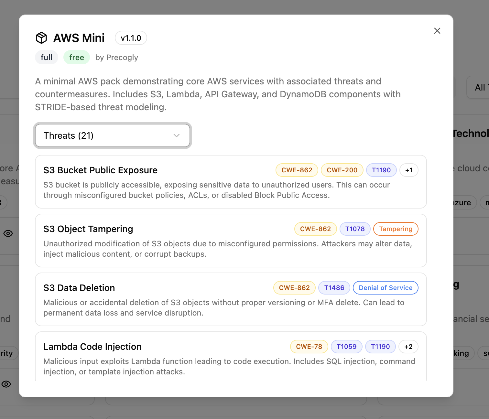
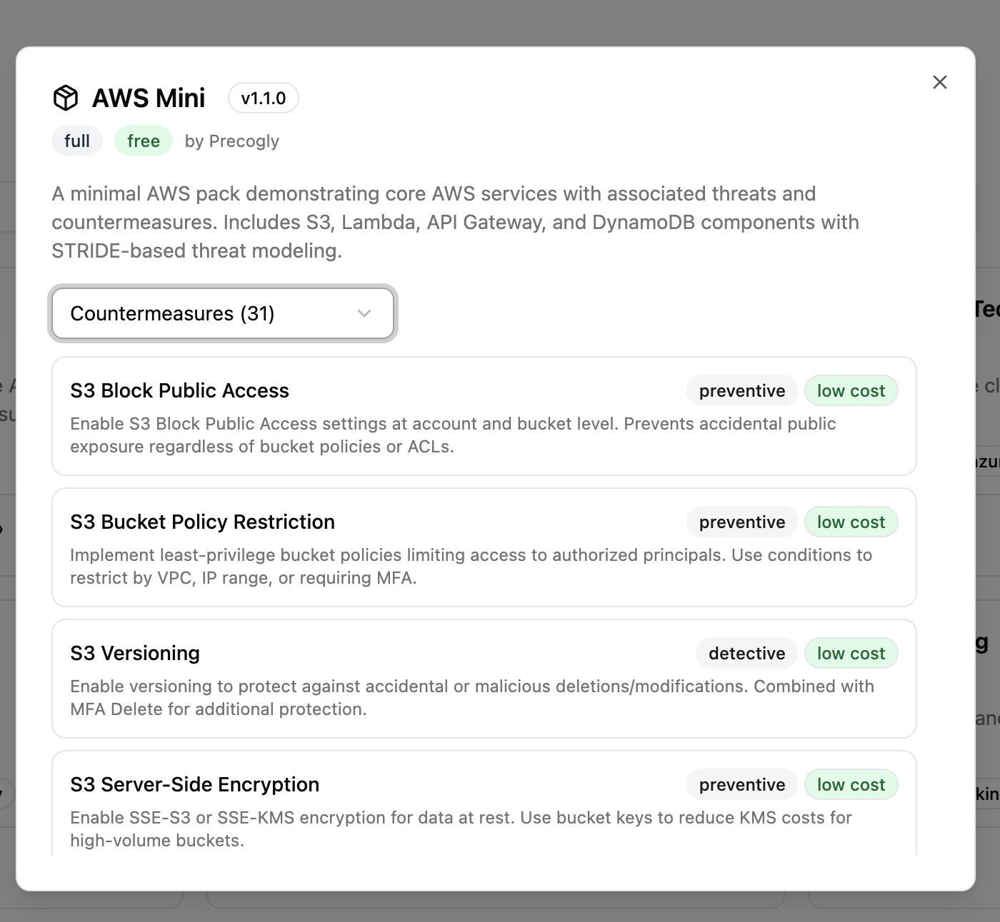
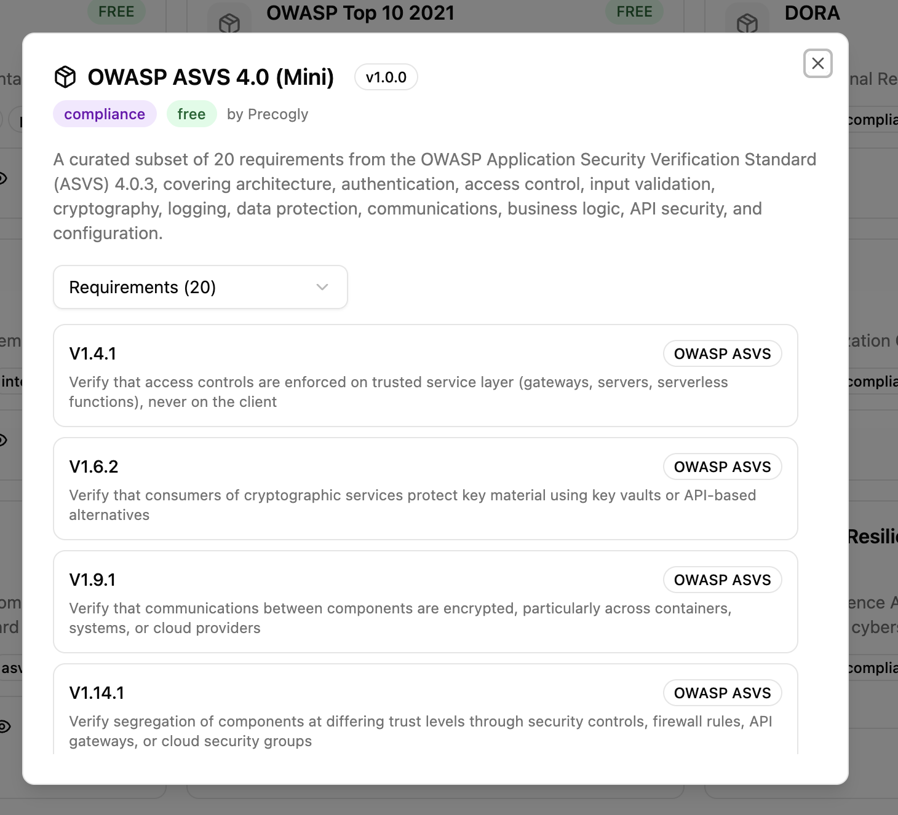
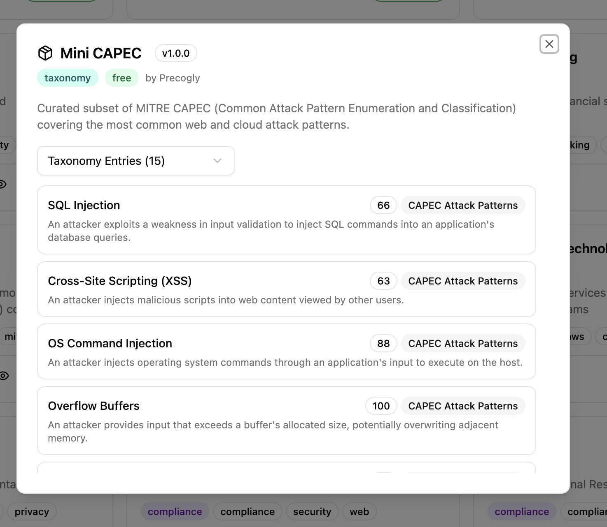
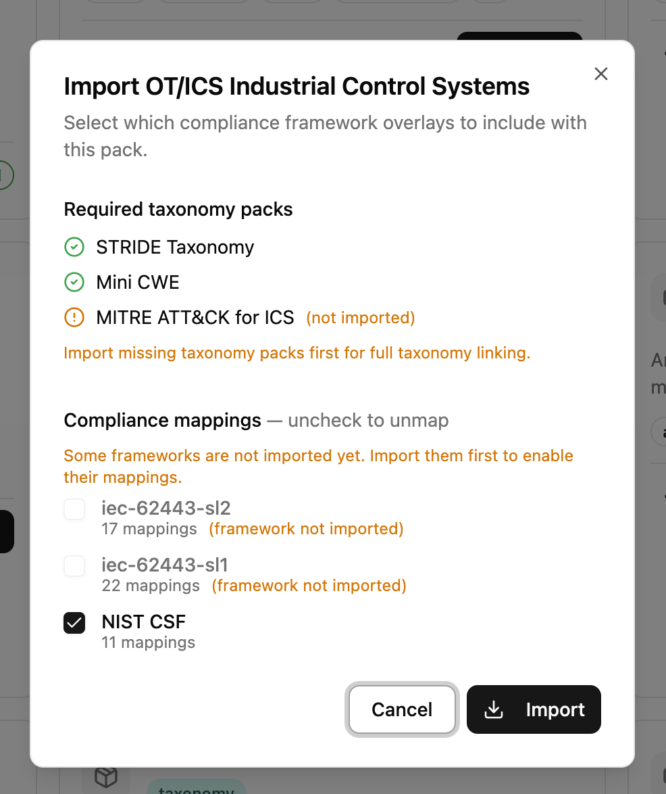
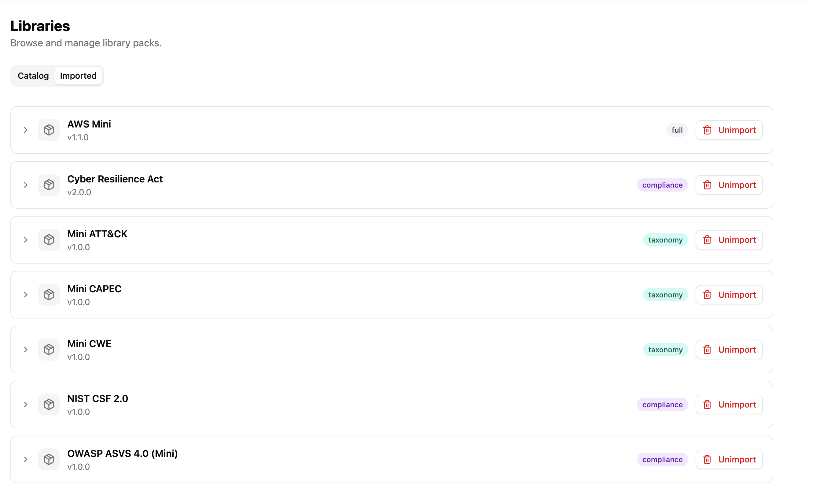

Library Packs¶
Library packs are modular bundles of threat-modeling content that you import into your Precogly organization. They provide a structured starting point so your team doesn't have to build threat models from scratch.
What's in a library pack?¶
A pack can contain any combination of:
- Components — technology building blocks (e.g., Amazon S3, API Gateway, PostgreSQL)
- Threats — what can go wrong for each component (e.g., S3 Bucket Public Exposure)
- Countermeasures — security controls that mitigate threats (e.g., S3 Block Public Access)
- Taxonomy mappings — links from threats to STRIDE, MITRE ATT&CK, CAPEC, CWE
- Compliance mappings — links from countermeasures to standards like NIST CSF, ASVS, SOC 2, PCI-DSS
- Cross-framework requirement mappings — links between requirements in different standards (e.g., IEC 81001 to FDA Premarket)
- DFD templates — pre-built Data Flow Diagrams with components already wired up
When you add a component from a library pack to your threat model, its associated threats and countermeasures come with it — along with all taxonomy and compliance links.

Pack types¶
| Type | Contains | Example |
|---|---|---|
technology |
Components only | aws, azure, gcp |
full |
Components + threats + countermeasures + joins + templates | aws |
compliance |
Framework definitions with requirements | nist-csf, pci-dss |
taxonomy |
External threat classification taxonomies | stride-taxonomy, capec |
template |
DFD templates only | — |
YAML structure¶
Every pack is a directory under libraries/packs/, organized by category (taxonomies/, standards/, threat-libraries/). Only pack.yaml is required — other files depend on the pack type.
threat-libraries/aws/
├── pack.yaml # Pack metadata (required)
├── components.yaml # Component definitions
├── threats.yaml # Threat definitions
├── countermeasures.yaml # Countermeasure definitions
├── joins/
│ ├── components-threats.yaml # Which threats apply to which components
│ ├── threats-countermeasures.yaml # Which countermeasures mitigate which threats
│ ├── threats-stride.yaml # Threat → STRIDE mappings
│ ├── threats-cwe.yaml # Threat → CWE mappings
│ ├── threats-capec.yaml # Threat → CAPEC mappings
│ ├── countermeasures-nist-csf.yaml # Countermeasure → NIST CSF mappings
│ ├── countermeasures-soc2.yaml # Countermeasure → SOC 2 mappings
│ └── requirements-fda-premarket.yaml # Cross-framework requirement mapping
└── dfd-templates/
└── s3-lambda.yaml # Pre-built DFD template
pack.yaml¶
pack:
schema_version: 1
slug: aws
name: AWS
version: 1.1.0
pack_type: full
description: |
AWS pack covering core infrastructure and AI/ML services
with associated threats and countermeasures.
author: Precogly
depends_on:
- taxonomies/stride-taxonomy
- taxonomies/capec
- taxonomies/cwe
- taxonomies/mitre-attack
tags:
- aws
- cloud
- technology
- saas
schema_version declares which version of the pack format this pack uses. The app checks this at import time and rejects packs with an unsupported version. This is separate from version, which tracks changes to the pack's content.
Here's how the YAML maps to what you see in the UI when previewing a pack:





components.yaml¶
components:
- id: s3
name: Amazon S3
category: datastore # process | datastore | external_human_actor | external_system_actor
type: Object Storage
provider: aws
description: |
Amazon Simple Storage Service for scalable object storage.
threats.yaml¶
threats:
- id: s3-public-exposure
name: S3 Bucket Public Exposure
description: |
S3 bucket is publicly accessible, exposing sensitive data.
countermeasures.yaml¶
countermeasures:
- id: s3-block-public-access
name: S3 Block Public Access
description: |
Enable S3 Block Public Access at account and bucket level.
control_type: preventive # preventive | detective | corrective | deterrent | recovery | compensating | procedural
cost: low # low | medium | high
Join files¶
Join files in the joins/ directory define relationships between items.
components-threats.yaml — which threats apply to which components:
mappings:
- component: s3
threats:
- threat: s3-public-exposure
applies_to: component # component | flow | both
threats-countermeasures.yaml — which countermeasures mitigate which threats:
threats-{taxonomy}.yaml — maps threats to taxonomy entries:
countermeasures-{framework}.yaml — maps countermeasures to compliance requirements:
framework: nist-csf-2
mappings:
- countermeasure: s3-bucket-policy
requirements:
- "PR.AC-4"
sufficiency: full # full | partial
requirements-{framework}.yaml — maps requirements between two compliance frameworks:
framework: fda-premarket-2023
source_framework: iec-81001-2021
mappings:
- requirement: "5.3"
entries:
- "FDA-PM-1"
sufficiency: full # full | partial
These cross-framework mappings appear in the Cross-Framework Mappings section of the Compliance report. See the Compliance Mapping guide for details.
How to import a library pack¶
Import requires Security Team role
The Import button is only visible to users with the Security Team organization role. If you don't see the Import button, ask your organization admin to update your role from Member to Security Team in the organization settings.
- Navigate to the Library Packs section from the sidebar
- Browse available packs — you can filter by type, tag, or search by name
- Click on a pack to preview its components, threats, and countermeasures
- Click Import to add it to your organization
Packs with dependencies (e.g., aws depends on stride-taxonomy, capec, etc.) will show which dependencies need to be imported. Dependencies are not enforced — you can import a pack without its taxonomy dependencies if you don't need taxonomy enrichment (STRIDE, CAPEC, CWE tags on threats). Import taxonomy packs first if you want full taxonomy linking.

Compliance overlay selection
When importing a pack, you can choose which compliance framework mappings to include. For example, import only NIST CSF mappings without SOC 2 if that's all you need. You will get warnings if packs that are depended upon by the importing pack have not yet been imported.
How to unimport a library pack¶
- Navigate to the Library Packs section
- Switch to the Imported tab
- Find the pack and click Unimport

Unimporting removes the library definitions (components, threats, countermeasures) but does not delete any threat model data you've already created using that pack. Your existing threat models keep their data — they just lose the link back to the library definition.
Warning
You cannot unimport a pack if other imported packs depend on it. Unimport the dependent packs first.
Taxonomy packs vs. compliance packs: Taxonomy packs (STRIDE, CAPEC, CWE, etc.) cannot be unimported while content packs that reference them are still imported — taxonomies directly enrich threat data. Compliance packs (NIST CSF, ASVS, etc.) can be unimported independently since compliance mappings are optional and degrade gracefully.
How to author a library pack¶
Creating your own pack involves writing YAML files following the structure above. For the complete authoring guide with field references, validation checklists, DFD template syntax, and cross-pack references, see:
Troubleshooting¶
Imported a pack but taxonomy tags are missing on threats : Taxonomy packs (STRIDE, CWE, CAPEC, etc.) must be imported before the content pack that references them. If you imported without taxonomy dependencies, the components, threats, and countermeasures are fine — but taxonomy links (e.g., STRIDE categories on threats) won't be present. To fix this, unimport the pack, import the taxonomy packs, then re-import.
Taxonomy mappings not showing up : Same as above — taxonomy packs must be imported first. The seed data imports taxonomies first for this reason.
Compliance mappings not appearing
: If the compliance framework pack (e.g., nist-csf) wasn't imported when the content pack was imported, the mappings are stored as pending. Import the framework pack and the mappings will activate automatically.
Cross-framework mappings not showing in the report : Both the source and target framework packs must be imported, and both frameworks must appear in the threat model's compliance data (through countermeasure mappings). See the Compliance Mapping guide for details.
Unimport blocked
: Another pack depends on the one you're trying to remove. Check which packs list it in their depends_on and unimport those first. Note that taxonomy packs are protected this way because they enrich threat data, while compliance packs can be unimported freely since their mappings are optional.